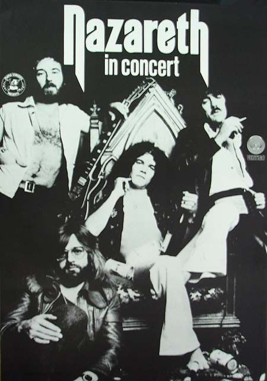
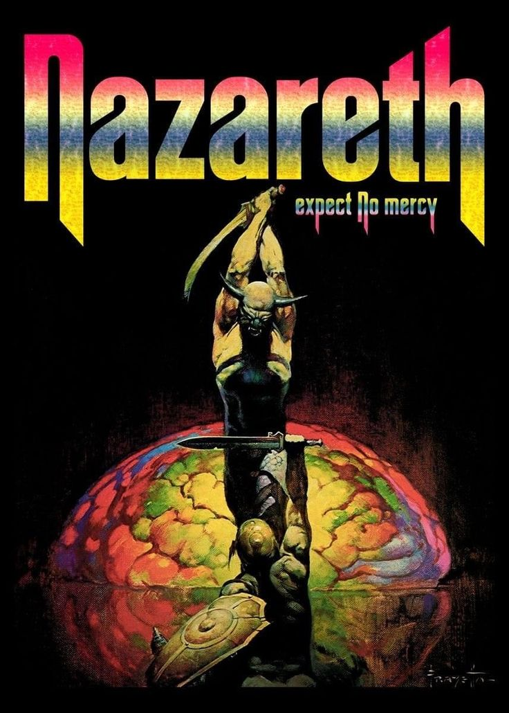
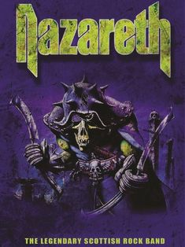
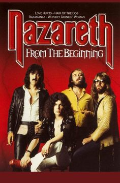
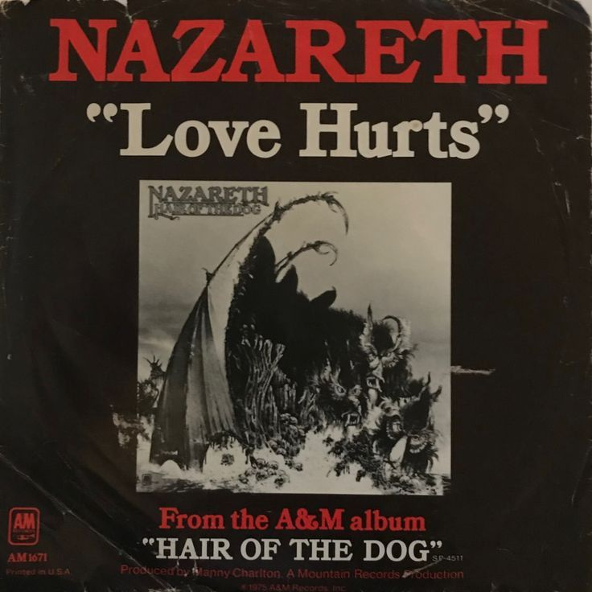

|  |
Nazareth es
una banda de hard rock originaria de Escocia, formada en 1968 por Dan
McCafferty (voz), Manny Charlton (guitarra), Pete Agnew (bajo) y
Darrell Sweet (bater a). Su estilo combina rock pesado, blues y baladas
mel dicas, con un sonido crudo y distintivo. Al principio, se inspiraron en bandas como Led Zeppelin y Deep Purple, pero pronto desarrollaron su propio estilo. Su gran xito lleg en los a os 70 con lbumes como Razamanaz (1973), producido por Roger Glover de Deep Purple, y Hair of the Dog (1975), que les dio reconocimiento mundial. A lo largo de los a os, Nazareth experiment con distintos sonidos, desde el rock pesado hasta el AOR (Album-Oriented Rock), logrando mantener una base de fans leal. Han influenciado a muchas bandas de rock y metal, incluyendo a Guns N’ Roses, quienes versionaron su canci n "Hair of the Dog". Dan McCafferty, su ic nico vocalista, dej la banda en 2013 debido a problemas de salud y falleci en 2022, dejando un gran legado en la historia del rock. A pesar de los cambios de formaci n, Nazareth sigue activo, con Pete Agnew como nico miembro original y una nueva generaci n de m sicos que mantienen viva su m sica. |
|  |
 |
 |
 |